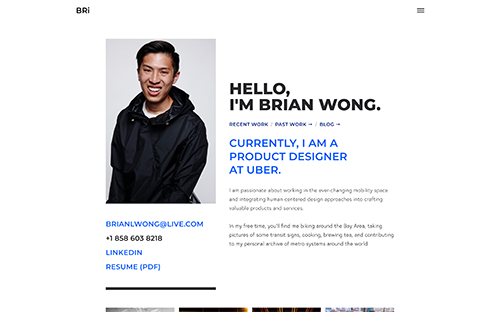
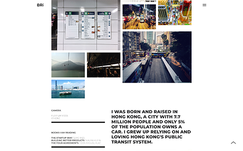
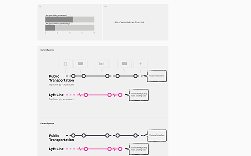
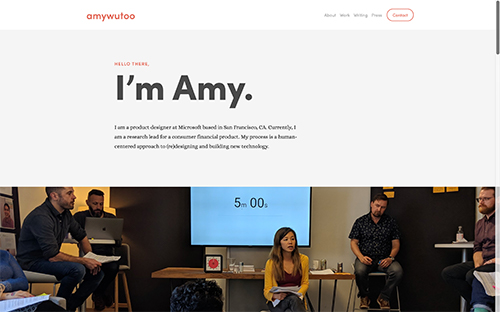
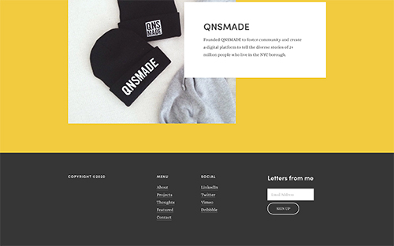
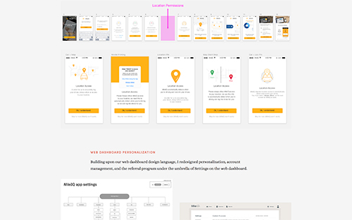

Post 4
Portfolio Research
Since my goal is to become a good UX designer, I decided to look at the portfolios of top UX designers in the field: Brian Wong from Uber and Amy Wu from Microsoft.
Link to Brian Wong’s Portfolio
     I found that these UX designers enjoy showing their projects in the form of case studies and walks through the design process of solving the problems until the final design, which demonstrates their skill, problem-solving ability and storytelling ability.
Another important factor is that the styling of their portfolio sites reflects the aesthetics of the designers, from minimalism to high interaction and motion. The designers are great at choosing the colors and backgrounds and the amount of negative space to guide the eyes of the viewers to the emphasized elements and movement throughout the page.
Both designers included responsive design according to device screen sizes.